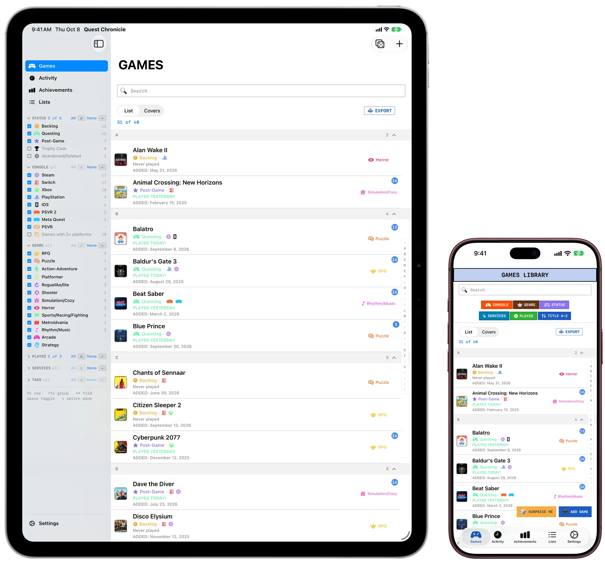
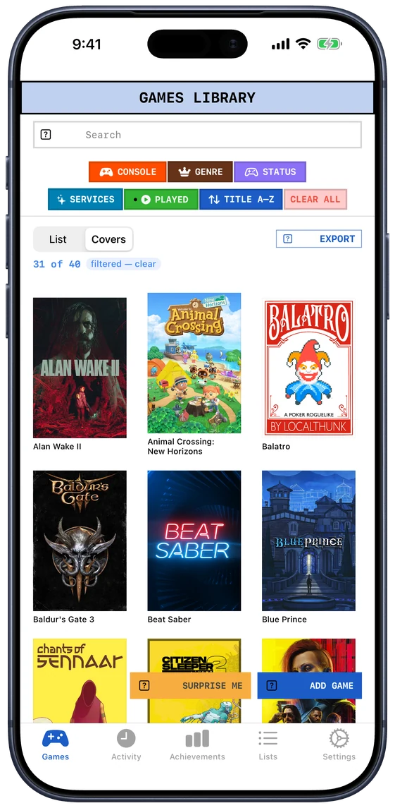
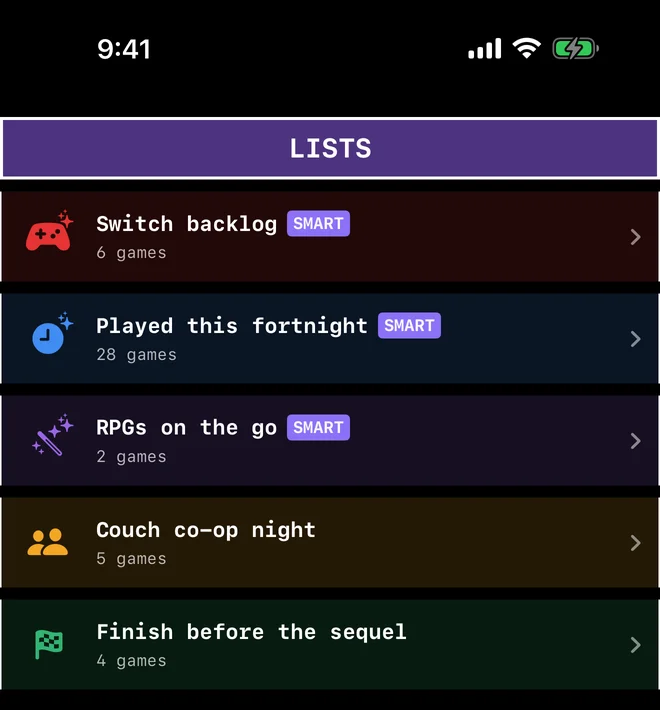
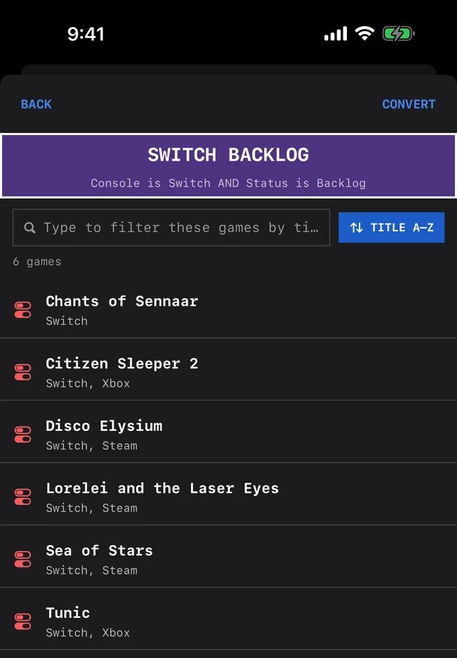
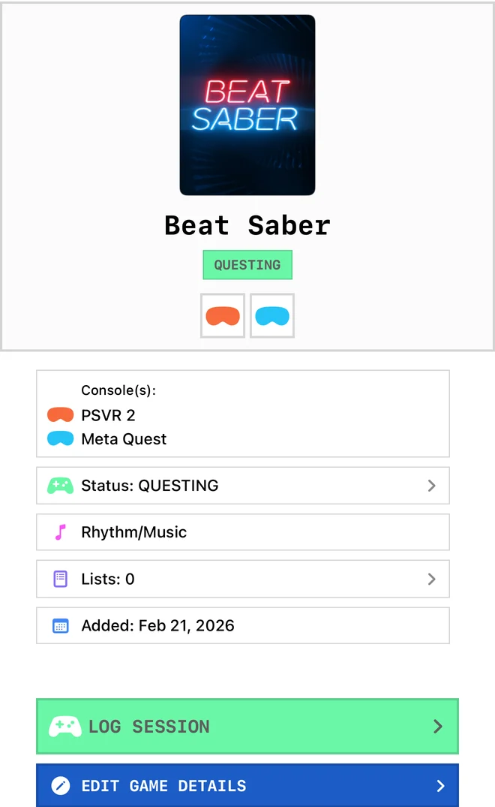
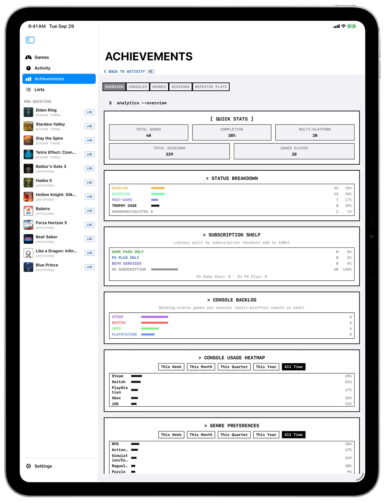
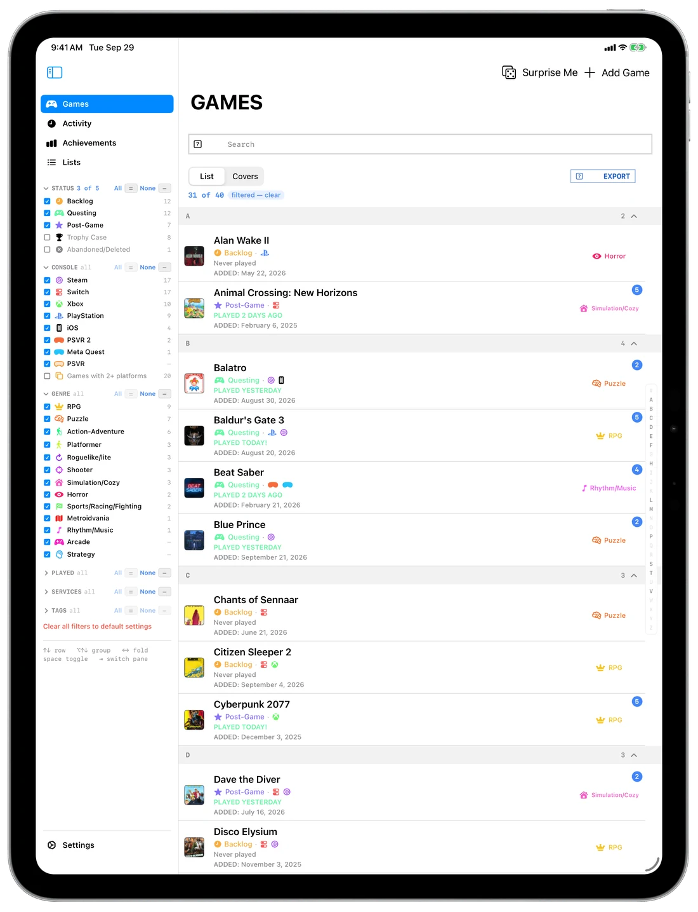
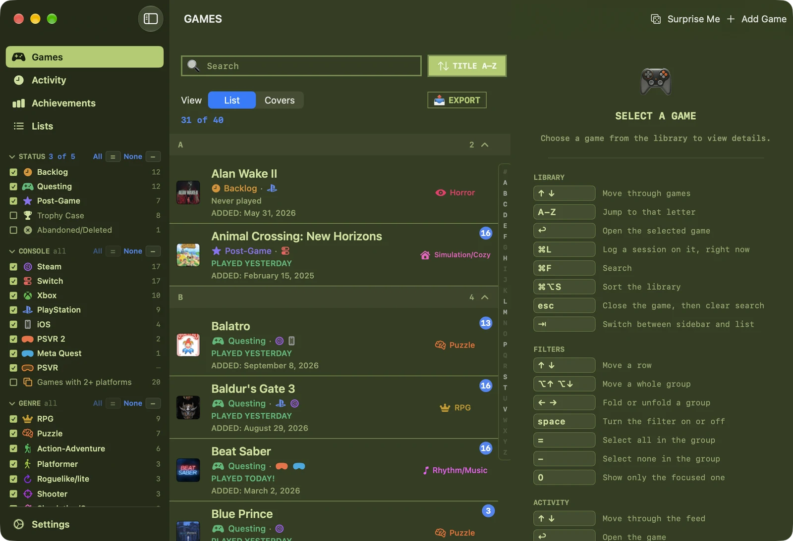

Spelling you don't have to fix
Fuzzy matching scored by how much of your search a candidate actually covers, so a near-match wins and a coincidence doesn't.
Every console, one library. Quest Chronicle keeps your whole collection in order and keeps an honest record of what you actually play — not just what you meant to.
Eight themes, each in light and dark. Real screenshots. Hover to pause, tap one to see it full size.
A library you have to keep up with is a chore.
One that keeps up with you is a record.
A library you cannot recognise at a glance is a list, not a library. Quest Chronicle pulls box art automatically, matching on what you typed rather than on what you should have typed, so "Froze Horizon 4" still finds Forza. When one source has nothing, it asks another.
Fuzzy matching scored by how much of your search a candidate actually covers, so a near-match wins and a coincidence doesn't.
Import a whole library from a CSV. Duplicates are caught on the way in, including the same game spelled two different ways.
Names and status while you're organising; a wall of box art when you're deciding what to play. Same games, same filters, different shape.
iCloud sync between Mac, iPhone and iPad, continuously, with no Sync button to remember to press.

Filter by console, genre, status, subscription or tag. Jump to a letter with the A–Z rail. It was built against a real library of nearly four thousand games.

Not a rating out of ten. Where the game actually stands with you. Pick one and see what it means.
Hollow Knight: Silksong
QUESTINGMake one by hand, for a couch co-op night or the games to finish before a sequel lands. Or give it rules and it fills itself, and checks again every time the library changes: start a Switch game and it leaves "Switch backlog" without being told.


With Apple Intelligence, type "short roguelikes on Switch I haven't played" and it writes the rules, which you check and change before saving.
Pin up to five lists to the sidebar on Mac and iPad. A list pinned on one device is pinned on the others.
Turn a smart list into an ordinary one whenever you want to stop it changing, and keep the games it had.
A session is the app's record that you sat down with a game. Log it from the game's page, from a quick search that's one shortcut away, from Siri, or straight from your Home Screen without opening the app at all. Add a line about what happened if you want to. You don't have to.

Open a game and Log Session is the first thing your thumb finds. Tap it, add a note if you want one, done.
Or skip the app entirely: the iPhone widget logs a game in one tap from your Home Screen, and Siri does it from a sentence.
The iPhone widget logs a session in one tap without opening the app. Small, medium or large, and you choose which games it shows.
⌘⇧L opens a quick log: type a few letters, pick the game, done. In the library, ⌘L logs the game you're on.
Each session can carry a note about what you beat or where you got stuck, and the Activity tab keeps every one of them in order.
The first session takes a game out of Backlog and into Questing, because playing it proves you started.
It checks every few minutes, and when it sees you've been playing something already in your library it writes the session itself, with how long it lasted. One evening is one session, however many times it looked.
Steam talks to Valve directly, with your key kept on your device. Xbox goes through xbl.io, an independent service you sign into yourself, because Microsoft offers no other way in. Either way nothing passes through a server of ours, which is also why there's nothing to cancel.
"Hey Siri, log Hades in Quest Chronicle." Name the game in the same breath and the app never has to open.
Every figure is built out of sessions that happened, not out of a score you gave something once. What you finish and what you abandon. Which consoles and genres really get played, as against the ones you keep buying for.

The status breakdown, a backlog for each console, a heatmap of what you played when, and which genres you really reach for — laid out together, so the pattern is visible rather than something you assemble in your head.

Given the width, the iPad doesn't show the phone's app made larger. It shows the desktop one: your filters down the side, the library in the middle, and the game you picked beside it rather than on top of it.
Attach a keyboard and every shortcut below works there too. Split View and Stage Manager both behave — the library narrows to the single-pane layout and keeps going.
A list of several thousand rows you can only drive with a mouse isn't a library, it's an endurance test. Every action has a key, and every key is published in a guide beside the list rather than buried in a menu.

No analytics, no crash reporting, no advertising, no profile built about you, nothing sold or shared. Your games travel between your devices through your own Apple account and nowhere else.
The privacy policy says the same thing at length, and it was written by reading every network call in the source rather than from memory.